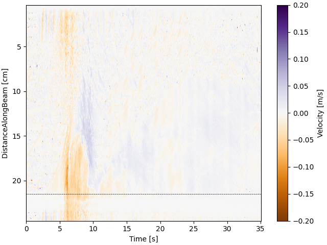
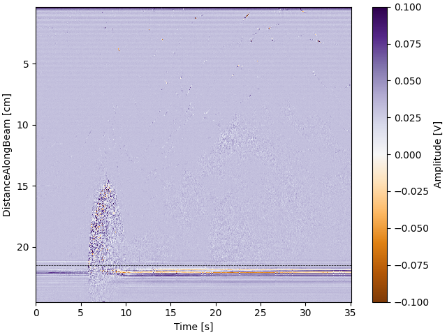

Note
Go to the end to download the full example code
Read and plot .mfprof data#
- 
- 
import matplotlib.colors as colors
import matplotlib.pyplot as plt
import numpy as np
from pyudv.read_mfprof import (
amplitude_from_mfprof_reading,
read_mfprof,
velocity_from_mfprof_reading,
)
#
path_data = "src/data_sample.mfprof"
# #### Loading data
Data, Parameters, Info, Units = read_mfprof(path_data)
Amplitude_data = amplitude_from_mfprof_reading(Data, Parameters)
Velocity_data = velocity_from_mfprof_reading(Data, Parameters)
time = Data["profileTime"]
z_coordinates = Data["DistanceAlongBeam"] * 1e2
indmax_time = np.argwhere(Data["transducer"] == 0)[1][0] - 1
indmax_z = -1
ind_bottom = 572
# #### plotting velocity
divnorm = colors.TwoSlopeNorm(vcenter=0, vmin=-0.2, vmax=0.2)
fig, ax = plt.subplots(1, 1, constrained_layout=True)
c = ax.pcolormesh(
time[:indmax_time],
z_coordinates[:indmax_z],
Velocity_data[:indmax_z, :indmax_time],
cmap="PuOr",
norm=divnorm,
rasterized=True,
shading="auto",
)
ax.axhline(y=z_coordinates[ind_bottom], color="k", lw="0.5", ls="--")
ax.invert_yaxis()
fig.colorbar(c, label="Velocity [m/s]")
ax.set_xlabel("Time [s]")
ax.set_ylabel("DistanceAlongBeam [cm]")
# fig.draw_without_rendering()
plt.savefig("plots/Spatio_temporal_velocity.pdf", dpi=600)
plt.show()
# #### plotting amplitude
divnorm = colors.TwoSlopeNorm(vcenter=0, vmin=-0.1, vmax=0.1)
fig, ax = plt.subplots(1, 1, constrained_layout=True)
c = ax.pcolormesh(
time[:indmax_time],
z_coordinates[:indmax_z],
Amplitude_data[:indmax_z, :indmax_time],
rasterized=True,
shading="auto",
cmap="PuOr",
norm=divnorm,
)
ax.axhline(y=z_coordinates[ind_bottom], color="k", lw="0.5", ls="--")
ax.invert_yaxis()
fig.colorbar(c, label="Amplitude [V]")
ax.set_xlabel("Time [s]")
ax.set_ylabel("DistanceAlongBeam [cm]")
plt.savefig("plots/Spatio_temporal_amplitude.pdf", dpi=600)
plt.show()
Total running time of the script: (0 minutes 4.715 seconds)